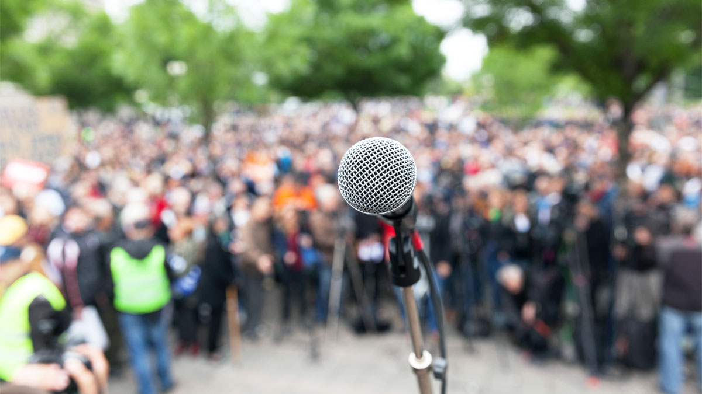

Modern technology has also presented a new question when it comes to free speech. How do you handle privately owned methods of communication? In the past, if you wanted to personally reach a crowd, you might go to a busy downtown street to try and talk to people. Today, many people reach a wider audience through social media.
Remember that the First Amendment protects against government interference with speech—not private interference. If a person is banned from a social media service, their viewpoint is silenced in a very real way. But since social media platforms are privately owned, First Amendment freedoms don’t apply. You may see society addressing this reality in the near future.
With any freedom, common sense should set limits as to when a person inhibits another person’s freedom, but it isn’t always so. These limits are constantly being redefined by the American court system and society’s standards as a whole.
There are exceptions where the government can punish speech if that speech is used to cause a panic, convince someone to desert the military, or threaten the president.
In both of these modern cases, the Supreme Court decided that the First Amendment protects even unpopular and offensive speech.
The right to assemble and protest can be limited for safety reasons but can’t be shut down without a good reason.
